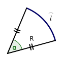
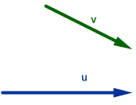
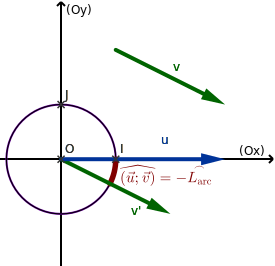
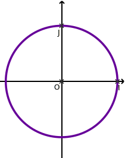
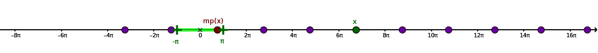

ils observent que les planètes du système solaire se déplacent dans une zone restreinte du ciel
: le
zodiaque : 12 constellations ;
le soleil cache successivement chaque constellation, chaque mois
un cercle, représentant approximativement l'année, peut donc être divisé en :
12 mois × 30 jours = 360 subdivisions.
Révolution française : le grade (gon) ; système métrique : 90° = 100 gon (grades) ;
1873 J. Thomson (Lord Kelvin) : le radian (unité SI).
Mesure des angles avec le cercle trigonométrique
Le radian
Étant donné un arc de cercle \(\overset{\frown}{l}\) de longueur
\(l\) et de
rayon
\(R\),
la mesure en radians de l'angle géométrique \(\widehat{\alpha}\) est :
\(\displaystyle\alpha=\frac{l}{R}\)
Un câble repose sur une poulie de diamètre 30cm. Une extrémité du câble est tendue
horizontalement et l'autre verticalement.
Calculer la longueur \(L\) de câble en contact avec la poulie.
30 cm de diamètre correspondent à un rayon de \(r\)=15 cm.
Les directions de la corde forment un angle droit, qui vaut \(\alpha=\dfrac{\pi}{4}\)
radians.
On sait que \(\displaystyle\alpha=\frac{l}{r}\), donc
\(L=\alpha r = \dfrac{15\pi}{2} = 23{,}56\) cm.
Les mesures en degré et radians sont proportionnelles :
\(180^\circ = \pi\) rad

Compléter le tableau par des mesures en degrés/radians associées. Compléter la troisième ligne
par plat/droit/obtus/aigu.
en radian
\(\pi\)
\(\frac{\pi}{2}\)
\(\frac{\pi}{6}\)
\(\frac{\pi}{4}\)
\(\frac{\pi}{3}\)
\(\frac{2\pi}{3}\)
\(\frac{3\pi}{4}\)
\(\frac{5\pi}{4}\)
\(\frac{-4\pi}{5}\)
\(\frac{9\pi}{4}\)
en degré
180˚
90˚
30˚
45˚
60˚
120˚
135˚
225˚
-144˚
405˚
nom ou obtus/aigu
plat
droit
aigu
aigu
aigu
obtus
obtus
obtus
obtus
aigu !
Orienter le plan
Convention : On oriente le plan dans le sens direct (positif); c'est à
dire :
le sens inverse des aiguilles d'une montre ;
le sens de la rotation à effectuer pour passer de l'axe des \(x\) à l'axe des \(y\) dans un repère.
le sens de rotation des véhicules sur un rond-point sur une carte.
Par opposition, le sens de rotation des aiguilles d'une montre est appelé sens indirect
(négatif).
Pour éviter les ambiguités, on nomme ou on énumère les sommets d'un polygone dans le sens direct.
Le cercle trignométrique
Dans un repère orthonormé, le cercle trigonométrique est le cercle qui a pour
centre le
centre du repère et qui est de rayon 1. On l'oriente dans le sens direct.
Comme le rayon est \(R=1\), le périmètre de ce cercle est donc de \(2\pi R = 2\pi\).
Mesure des angles orientés
On utilise le cercle trigonométrique pour mesurer des angles, de la même façon que l'on utilise un
rapporteur
:
On note \(\left(\overrightarrow{u};\overrightarrow{v}\right)\) une paire de vecteurs non nuls. On
souhaite
mesurer
en radians l'angle orienté noté \(\widehat{\left(\overrightarrow{u};\overrightarrow{v}\right)}\),
angle
permettant de passer (par rotation) de la direction de \(\overrightarrow{u}\) à celle de
\(\overrightarrow{v}\).

On trace un représentant \(\overrightarrow{v'}\) de \(\overrightarrow{v}\) ayant même
origine que
\(\overrightarrow{u}\) ; on trace un cercle trigonométrique centré sur cette origine, l'axe
\((Ox)\)
ayant
même
direction que \(\overrightarrow{u}\) ;
la longueur de l'arc permettant de passer de \(\overrightarrow{u}\) à
\(\overrightarrow{v'}\)
correspond à
la
valeur absolue de la mesure d'angle
\(\widehat{\left(\overrightarrow{u};\overrightarrow{v}\right)}\),
car le
rayon du cercle trigonométrique est \(1\) ;
le signe de \(\widehat{\left(\overrightarrow{u};\overrightarrow{v}\right)}\) est positif
lorsque
l'on
passe
de
\(\overrightarrow{u}\) à \(\overrightarrow{v}\) en tournant dans le sens direct ; négatif
(cas de la
figure
donnée) si l'on tourne dans le sens indirect.

Congruences et mesures principales
Enroulement de la droite réelle sur le cercle trigonométrique
Par la construction exposée dans ce paragraphe, on a voulu pouvoir prendre en compte dans les
mesures d'angles le fait de faire plusieurs tours :
On peut «enrouler», en conservant les longueurs (cette opération s'appelle
revêtement
isométrique),
une
droite graduée représentant l'ensemble des réels sur le cercle trigonométrique, conventionnellement,
de la façon indiquée sur
le schéma ci-contre.
Chaque réel \(t\) correspond alors à un point sur le cercle trigonométrique ; ce point est
repéré par deux
coordonnées dans le repère \((O;I;J)\) associé au cercle trigonométrique ;
Chaque point \(M\) du cercle à une infinité d'antécédents réels, espacés de \(2\pi\) (la
longueur
d'un tour du cercle trigonométrique).
2 réels ayant la même image sur le cercle trigonométrique que le réel \(\frac{-\pi}{2}\).
\(\frac{-5\pi}{2}\) et \(\frac{3\pi}{2}\), par exemple.
3 réels ayant la même image sur le cercle trigonométrique que le réel \(\frac{\pi}{4}\).
\(\frac{-7\pi}{4}\) et \(\frac{9\pi}{4}\), par exemple.
Un snowboarder effectue 2 tours et demi dans le sens indirect.
Donner en radian la mesure d'angle correspondante.
2 tours et demi correspondent, dans le sens négatif, à \(-\left(2+\frac{1}{2}\right)\times 2\pi=-5\pi\)
Congruences
On note deux réels \(t\) et \(t'\).
Lorsqu'il existe un entier (relatif) \(k\) tel que \(t=t'+2k\pi\), ce qui revient à dire que
\(t\)
et
\(t'\)
s'envoient sur la même point sur le cercle trigonométrique, on dit que \(t\) et \(t'\) sont
congrus modulo \(2\pi\)
, et on écrit :
\( t \equiv t' \pmod {2\pi}\)
Deux mesures d'angles en radians congrues modulo \(2\pi\) correspondent au même angle géométrique.
On calcule leur différence : \(\frac{5\pi}{2} - \frac{-\pi}{2}=\frac{6\pi}{2}=3\pi\), or \(3\pi\) n'est
pas un multiple de \(2\pi\), ces deux mesures d'angles ne correspondent donc pas au même angle
géométrique.
Si \(x \equiv x' \pmod {2\pi}\) et \(y \equiv y' \pmod {2\pi}\) et \(z\neq0\), on a :
\(x+y \equiv x'+y' \pmod {2\pi}\)
\(zx \equiv zx' \pmod{2\pi z}\)
⭐Résoudre et représenter les solutions sur le cercle trigonométrique :
\(\widehat{\left(\overrightarrow{u};\overrightarrow{v}\right)}\equiv 0 \pmod {2\pi}
\Leftrightarrow
\overrightarrow{u}//\overrightarrow{v}\) et ont même sens ;
\(\widehat{\left(\overrightarrow{u};\overrightarrow{v}\right)}\equiv \pi \pmod {2\pi}
\Leftrightarrow
\overrightarrow{u}//\overrightarrow{v}\) et sont de sens opposés.

Mesure principale
Un clown fait 10 m sans déraper sur un monocycle dont la roue, de centre noté O, à un rayon
r=20cm, puis tombe.
Combien de tours a fait la roue avant la chute (indication : calculer le périmètre de la roue) ?
Le périmètre de la roue est \(p=2\pi r = 40\pi\) cm.
Pour calculer le nombre \(n\) de tours de roue, on divise la distance parcourue par ce
périmètre
(car la roue ne dérape pas), attention à exprimer les distances dans la même unité ! :
\(n = \frac{1000\textrm{ cm}}{40\pi\textrm{ cm}}=\frac{25}{\pi}\approx 7{,}95\) tours.
⭐
Le clown avait marqué sur sa roue le point de contact avec le sol (point A). Au moment de sa
chute,
le dernier point de contact avec le sol est B.
Trouver la mesure en radians de \(\widehat{AOB}\).
l'angle en radians correspondant est \(2\pi n\), soit 50 radians, mais dans cet angle on
compte
plusieurs tours ! L'angle que l'on va observer sur la roue s'obtient en enlevant les 7 tours
complets de roue, qui correspondent à un angle de \(7\times 2\pi=14\pi\).
La réponse est ainsi \(50-14\pi\approx 6{,}02\) radians (345°).
On appelle mesure principale d'un angle \(x\) le nombre \(\textrm{mp}(x)\) tel que
:
\(\displaystyle x \equiv \textrm{mp}(x) \pmod{2\pi}\) et \(\textrm{mp}(x)\in\left]-\pi;\pi\right]\)
Parmi tous les représentants de \(x\) modulo \(2\pi\), la mesure principale est le seul représentant
de
\(x\)
dans l'intervalle \(\left]-\pi,\pi\right]\).

Pour trouver \(\textrm{mp}(x)\), on enlève à \(x\) un nombre entier \(k\) de tours complets
(chacun
de \(2\pi\) radians) du cercle trigonométrique. Calculatrice : \(k\) est la valeur arrondie à l'entier le plus proche de
\(\frac{x}{2\pi}\)
On calcule ensuite \(x-2k\pi\) pour obtenir \(\textrm{mp}(x)\).
À la main : On repère le multiple entier de \(2\pi\) le plus proche de \(x\)
et on
soustrait.
Calculer les mesures principales des angles de mesures suivantes :
\(\dfrac{5\pi}{3}\) ;
\(\frac{-\pi}{3}\)
\(\dfrac{3\pi}{2}\) ;
\(\frac{-\pi}{2}\)
\(\dfrac{-5\pi}{4}\) ;
\(\frac{3\pi}{4}\)
\(\dfrac{4\pi}{3}\) ;
\(\frac{-2\pi}{3}\)
\(\dfrac{-11\pi}{6}\) ;
\(\frac{\pi}{6}\)
\(\dfrac{-11\pi}{2}\) ;
\(\frac{\pi}{2}\)
\(25\pi\) ;
\(\pi\)
\(18\pi\) ;
\(0\)
\(-14\pi\) ;
\(0\)
\(\dfrac{40\pi}{3}\) ;
\(\frac{4\pi}{3}\)
\(\dfrac{-31\pi}{6}\) ;
\(\frac{5\pi}{6}\)
\(\dfrac{25\pi}{4}\) .
\(\frac{\pi}{4}\)
\(\dfrac{-27\pi}{4}\) .
\(\frac{-3\pi}{4}\)
\(\dfrac{-1111\pi}{11111}\) .
\(\frac{-1111\pi}{11111}\)
\(-\pi\) .
\(\pi\)
Compléments sur les angles
Relation de Chasles
Si \(\overrightarrow{u}\), \(\overrightarrow{v}\), \(\overrightarrow{w}\) sont trois vecteurs non nuls,
on a
:
\(\displaystyle
\widehat{\left(\overrightarrow{u};\overrightarrow{v}\right)}+\widehat{\left(\overrightarrow{v};\overrightarrow{w}\right)}\equiv\widehat{\left(\overrightarrow{u};\overrightarrow{w}\right)}\pmod{2\pi}\)
Le but de cet exercice est de démontré un résultat connu sur la somme des angles d'un triangle dans
le plan.
Étant donné un triangle ABC, démontrer que la somme des angles orientés de ce triangle est
congrue à \(\pi\) modulo \(2\pi\).
Exprimer en fonction de \(\widehat{\left(\overrightarrow{u}
;\overrightarrow{v}\right)}\)
l'angle \(\widehat{\left(-2\overrightarrow{v};7\overrightarrow{u}\right)}\)
On se place dans un repère orthonormé \((O;I;J)\) et dans le cercle
trigonométrique
associé.
On considère une horloge analogique (à aiguilles) tracée sur ce cercle trigonométrique, munie
d'une petite
aiguille
\(\overrightarrow{OP}\) de norme \(\frac{3}{4}\) et d'une grande aiguille
\(\overrightarrow{OG}\)
de
norme \(1\). Le fonctionnement de cette horloge à la fois esthétique et précise est
conventionnel ;
et
assuré
par des piles en bon état de marche.
On note \(t\) le temps, en heures, et on considère une journée
\(\mathcal{D}=\left[0;24\right[\).
Pour tout \(t\in \mathcal{D}\), on a :
\(
\alpha=\widehat{\left(\overrightarrow{OJ};\overrightarrow{OP}\right)}\equiv\frac{-2\pi}{12}
t\pmod{2\pi}
\)
et
\(\beta=\widehat{\left(\overrightarrow{OJ};\overrightarrow{OG}\right)}\equiv-2\pi
t\pmod{2\pi}
\) et
Calculer
\(\alpha\) et \(\beta\) pour \(t\in \left\{12\,;\,6{,}75\,;\right\}\) et faire des figures ; on
insistera sur l'aspect esthétique de l'horloge.
Pour \(t=12\) : \(\alpha\equiv 0 \pmod{2\pi}\) et \(\beta\equiv 0 \pmod{2\pi}\)
Pour \(t=6{,}75\) : \(\alpha\equiv \frac{9\pi}{8} \pmod{2\pi}\) et \(\beta\equiv
\frac{27\pi}{2}\equiv\frac{3\pi}{4} \pmod{2\pi}\)
À quelle(s) heure(s) de la journée(s) les directions des deux aiguilles sont-elles symétriques par
rapport à (Oy) ?
On résout \(\alpha\equiv-\beta\pmod{2\pi}\). On obtient \(t\equiv 0\pmod{\frac{12}{13}}\), ce
qui donne :
0h0m0s ; 0h55m23s ; 1h50m46s ; 2h46m9s ; 3h41m32s ; 4h36m55s ; 5h32m18s ; 6h27m41s ; 7h23m4s ;
8h18m27s ; 9h13m50s ; 10h9m13s ; 11h4m36s, pareil pour l'après-midi.
À quelle(s) heure(s) de la journée les directions des deux aiguilles sont-elles symétriques par
rapport à
\((Ox)\) ? (On résoudre \(\alpha\equiv\pi-\beta\pmod{2\pi}\).)
On résout \(\alpha\equiv\pi-\beta\pmod{2\pi}\).
On obtient \(t\equiv \frac{6}{13}\pmod{\frac{12}{13}}\), ce
qui donne :
0h27m41s ; 1h23m4s ; 2h18m27s ; 3h13m50s; 4h9m13s ; 5h4m36s; 6h0m0s; 6h55m23s ; 7h50m46s ;
8h46m9s ; 9h41m32s ; 10h36m55s ; 11h32m18s et pareil pour l'après-midi.
À quelle(s) heure(s) de la journée les deux aiguilles sont-elles alignées ? De
même sens ?
De
sens
opposé
?
On résout \(\alpha\equiv\beta\pmod{\pi}\).
On obtient \(t\equiv 0\pmod{\frac{6}{11}}\), ce
qui donne, en alternant même sens et sens opposé :
0h0m0s ; 0h32m43s ; 1h5m27s ; 1h38m10s ; 2h10m54s ; 2h43m38s ; 3h16m21s ; 3h49m5s ; 4h21m49s ;
4h54m32 ; 5h27m16s ; 6h ; 6h32m43s ; 7h5m27s ; 7h38m10s ; 8h10m54s ; 8h43m38s ; 9h16m21s ;
9h49m5s ; 10h21m49s ; 10h54m32s ; 11h27m16s et pareil pour l'après-midi.
À quelle(s) heure(s) de la journée les deux aiguilles sont-elles perpendiculaires ?
On résout \(\alpha\equiv\frac{\pi}{2}+\beta\pmod{\pi}\).
On obtient \(t\equiv \frac{3}{11}\pmod{\frac{6}{11}}\), ce
qui donne :
0h16m21s ; 0h49m5s ; 1h21m49s ; 1h54m32s ; 2h27m16s ; 3h0m0s ; 3h32m43s ; 4h5m27s ; 4h38m10s ;
5h10m54s ; 5h43m38s ; 6h16m21s ; 6h49m5s ; 7h21m49s ; 7h54m32s ; 8h27m16s ; 9h0m0s ; 9h32m43s ;
10h5m27s ; 10h38m10s ; 11h10m54s ; 11h43m38s et pareil pour l'après-midi.
⭐
Montrer que si \(\overrightarrow{u}//\overrightarrow{u'}\) et
\(\overrightarrow{v}//\overrightarrow{v'}\) (ces quatre vecteurs sont non nuls), alors
\(2\widehat{\left(\overrightarrow{u'};\overrightarrow{v'}\right)}\equiv2\widehat{\left(\overrightarrow{u};\overrightarrow{v}\right)}\).
On sait que \(\overrightarrow{u}//\overrightarrow{u'}\)
donc \(\widehat{\left(\overrightarrow{u};\overrightarrow{u'}\right)}\equiv 0 \pmod{\pi}\), et en
multipliant par 2 : \(2\widehat{\left(\overrightarrow{u};\overrightarrow{u'}\right)}\equiv 0
\pmod{2\pi}\). On a aussi, en suivant le même raisonnement :
\(2\widehat{\left(\overrightarrow{v};\overrightarrow{v'}\right)}\equiv 0 \pmod{2\pi}\).
On utilise la relation de Chasles :
\(2\widehat{\left(\overrightarrow{u'};\overrightarrow{v'}\right)}
\equiv
2\left(
\widehat{\left(\overrightarrow{u'};\overrightarrow{u}\right)}
+\widehat{\left(\overrightarrow{u};\overrightarrow{v}\right)}
+\widehat{\left(\overrightarrow{v};\overrightarrow{v'}\right)}
\right)
\equiv
2\widehat{\left(\overrightarrow{u'};\overrightarrow{u}\right)}
+2\widehat{\left(\overrightarrow{u};\overrightarrow{v}\right)}
+2\widehat{\left(\overrightarrow{v};\overrightarrow{v'}\right)}\)
\(
\equiv
-0+2\widehat{\left(\overrightarrow{u};\overrightarrow{v}\right)}+0
\equiv
2\widehat{\left(\overrightarrow{u};\overrightarrow{v}\right)}
\pmod{2\pi}
\)
Remarque : grâce à ce calcul, on voit que la réciproque de ce résultat est aussi vraie.
On trace deux droites \(d\) et \(d'\). Une troisième droite \(\Delta\) coupe ces deux
droites
respectivement en en \(A\) et \(A'\).
Déduire de la réponse précédente que \(d//d'\) équivaut à «l'un des angles orientés autour de
\(A\)
a le
même double qu'un angle orienté autour de \(A'\)».
Si \(d // d'\), alors les angles correspondants sont égaux donc leurs doubles aussi.
Si «l'un des angles orientés autour de
\(A\)
a le
même double qu'un angle orienté autour de \(A'\)» est vrai, il suffit de reprendre les
conclusions de
l'exercice précédent avec \(\overrightarrow{u}\) et \(\overrightarrow{u'}\) des vecteurs
directeurs de
\(d\) et \(d'\), et \(\overrightarrow{v}=\overrightarrow{v'}\) un vecteur directeur de
\(\Delta\).